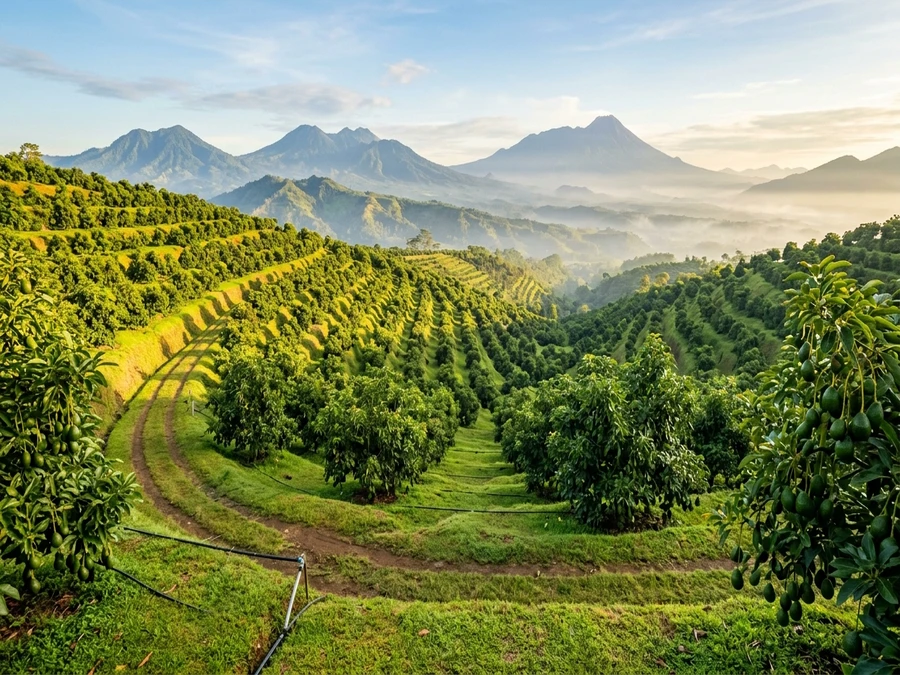
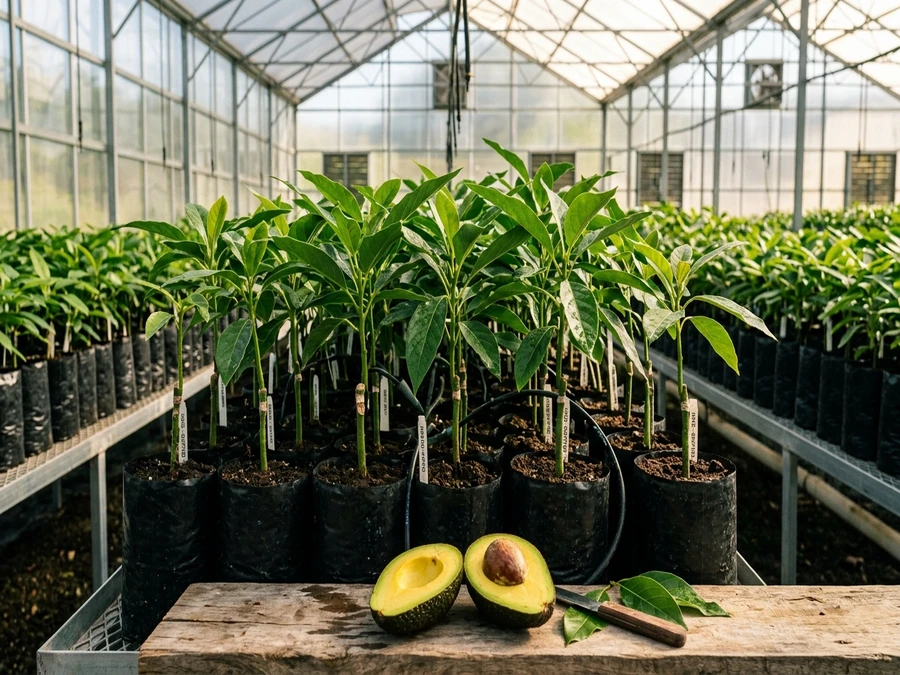
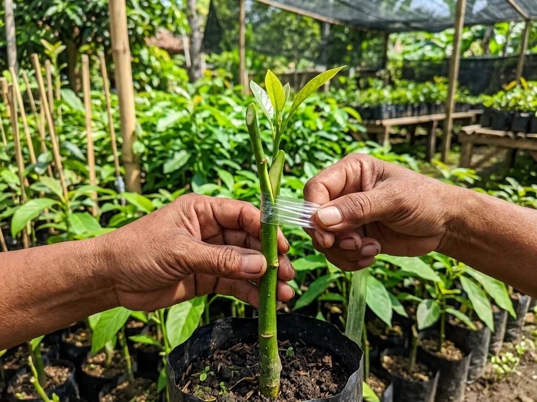
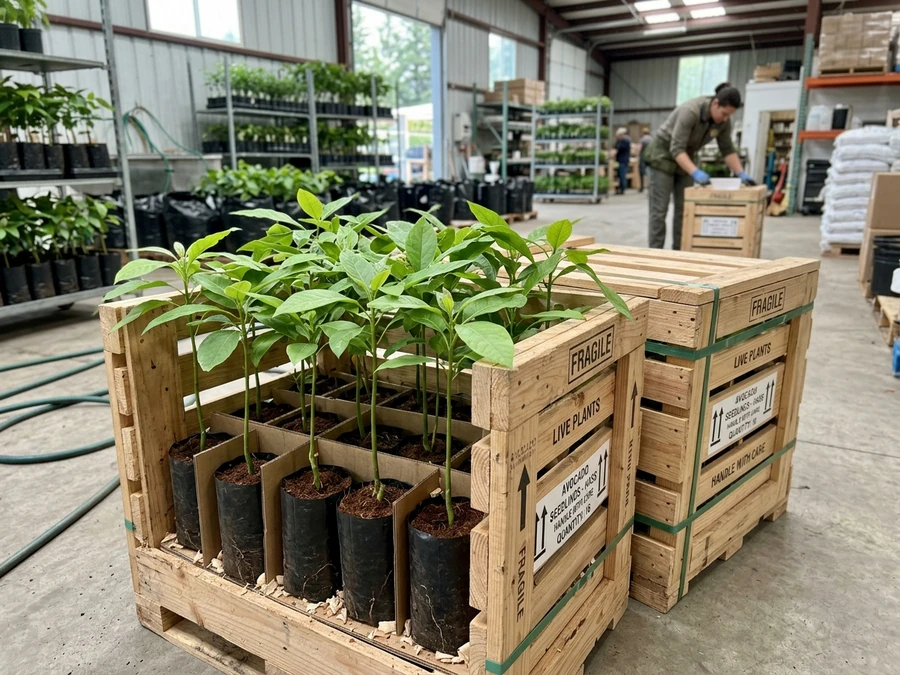
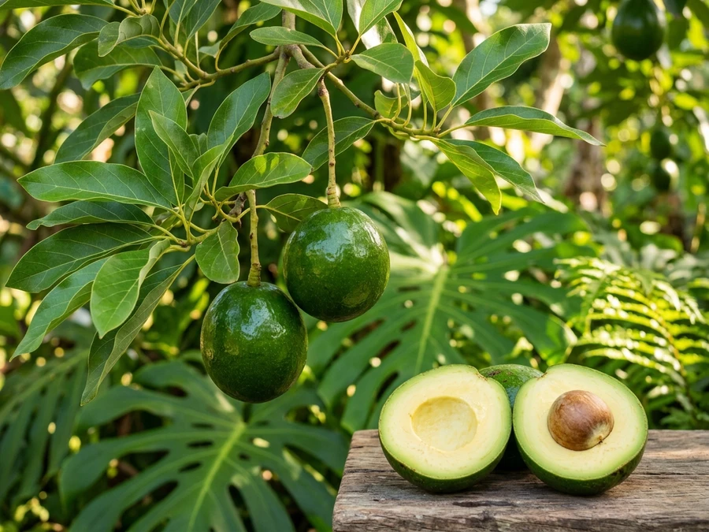
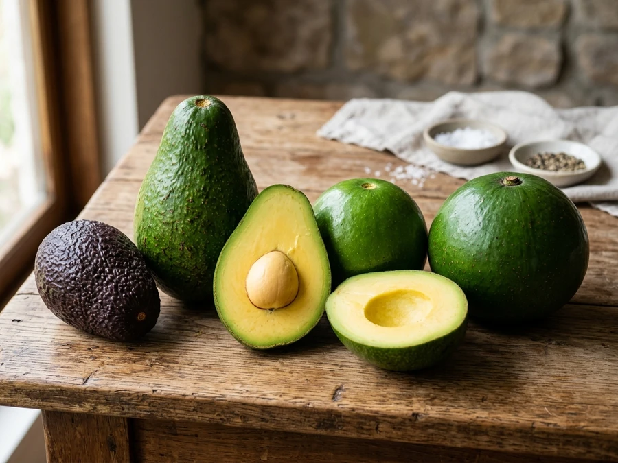
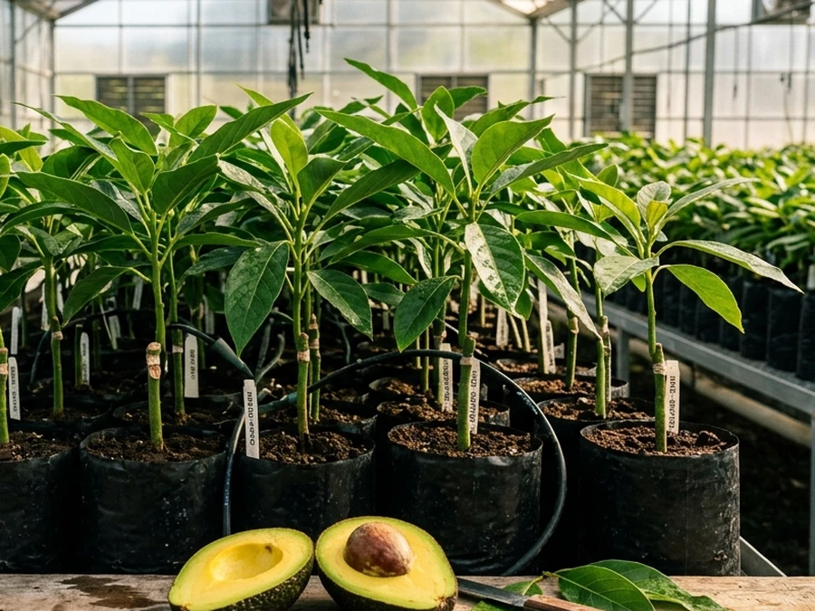
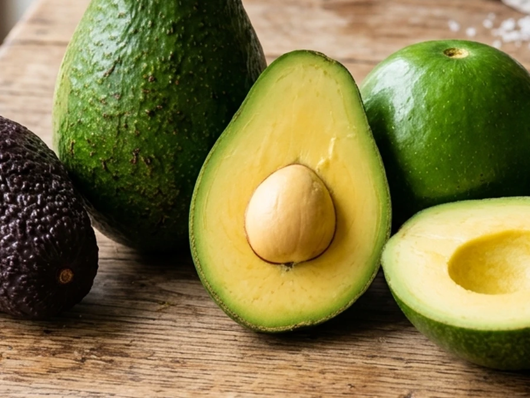

Galeri Dokumentasi Nursery
Melihat langsung kebun indukan terpelihara, ketelitian okulasi sambung pucuk, standar peti kayu pengiriman, serta kualitas panen buah bermentega.








Transparansi 100%
Foto Asli Langsung Dari Nursery Kami
Sesuai prinsip etika PRD kami, seluruh dokumentasi di atas merupakan foto riil aktivitas operasional Astana Avocado. Kami tidak menggunakan foto palsu atau menjanjikan klaim hasil panen yang tidak realistis.
Minta Video Stok Bibit Terbaru Hari Ini